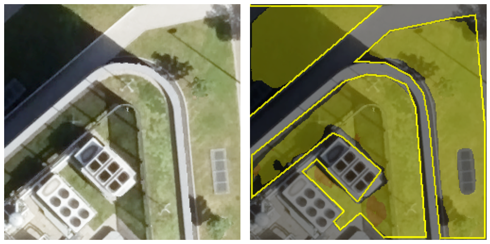

Bäume, Parks, Rasenflächen und Hecken sind mehr als nur schön anzusehen. Stadtgrün hilft, Städte an heißen Sommertagen kühl zu halten, und nimmt Regenwasser auf, das sonst Straßen überfluten und die Kanalisation überlasten würde. Um diese Grünflächen planen, pflegen und schützen zu können, müssen Städte genau wissen, wo Vegetation wächst. Detaillierte Vegetationskarten fließen zudem in Computersimulationen ein, mit denen sich Städte auf Hitzewellen und Starkregen vorbereiten können.
Solche Karten lassen sich mithilfe künstlicher Intelligenz aus Luft- und Satellitenbildern erstellen. Bisher waren die meisten dieser Ansätze jedoch aufwendig umzusetzen und erforderten leistungsstarke, teure Computer.
Ein einfacherer Ansatz
In diesem Projekt haben wir untersucht, ob sich Vegetation auch mit leicht verfügbaren KI-Werkzeugen, die auf gewöhnlicher Hardware laufen, zuverlässig kartieren lässt. Dafür haben wir hochaufgelöste Luftbilder von Stuttgart verwendet, in denen jeder Bildpunkt gerade einmal 8 mal 8 Zentimeter am Boden abdeckt. Neben den normalen Farbinformationen erfassen die Bilder auch nahes Infrarotlicht, das für das menschliche Auge unsichtbar ist, aber häufig zur Erkennung von Pflanzen genutzt wird.
Um der KI beizubringen, wie Vegetation aussieht, haben wir auf knapp 4.000 Bildern von Hand Flächen mit hoher Vegetation (etwa Bäume und Sträucher) und niedriger Vegetation (etwa Rasen und Wiesen) markiert.
Anschließend haben wir zwei verschiedene Arten von KI-Modellen trainiert. Das erste ordnet jeden einzelnen Bildpunkt eines Bildes danach ein, ob er hohe Vegetation, niedrige Vegetation oder keines von beiden zeigt. Das zweite führt eine Objekterkennung durch und zeichnet Rahmen um einzelne Vegetationsflächen.
Unsere Ergebnisse
Beide Methoden haben Vegetation zuverlässig erkannt, und ihre Ergebnisse stimmten weitgehend mit dem überein, was ein Mensch beim Betrachten der Bilder sieht. Der pixelgenaue Ansatz erwies sich dabei als besonders präzise.
{kind=link}

Nebenbei haben wir einige nützliche Erkenntnisse gewonnen. Die Infrarotinformationen erwiesen sich als nicht notwendig: Die Modelle schnitten mit gewöhnlichen Farbbildern genauso gut ab. Auch kleine, schlanke Versionen der Modelle lieferten solide Ergebnisse, sodass keine spezielle Computerausstattung benötigt wird. Der größte begrenzende Faktor für die Genauigkeit war nicht die KI selbst, sondern die Qualität der von Hand erstellten Trainingsbeispiele. Schließlich funktionierten unsere Modelle auch gut mit frei verfügbaren Luftbildern geringerer Auflösung, die sie während des Trainings nie gesehen hatten.
Warum das wichtig ist
Unsere Ergebnisse zeigen, dass sich genaue Vegetationskarten mit kostenlosen, einfach zu bedienenden KI-Werkzeugen und geringer Rechenleistung aus Luftbildern erstellen lassen. Damit wird die Technologie für einen breiten Kreis von Nutzerinnen und Nutzern zugänglich, von Stadtverwaltungen und Planungsbüros bis hin zu Forschenden und Umweltorganisationen.
Veröffentlichung
Diese Arbeit entstand als Projektarbeit im Rahmen des Moduls „Remote Sensing Studio“ im Studiengang Master Photogrammetry and Geoinformatics an der Hochschule für Technik Stuttgart.
Die Ergebnisse wurden auf der Jahrestagung der Deutschen Gesellschaft für Photogrammetrie, Fernerkundung und Geoinformation (25.–27. März 2026) in Darmstadt vorgestellt. Der vollständige Beitrag ist verfügbar im Tagungsband:
K. H. Aung, J. A. Ayala Rico, I. A. Ayibilisah, M. Farhang Khaghan Pour, L. Hakim, S. Joshi, A. K. Rasa, B. C. Mwimangire, O. M. Mukiri, N. Rahbardarestani, J. D. Velazquez Cupido, Q. Yousufzai, W. Rauser, M. Mommert, “Urban Vegetation Mapping from High-Resolution Aerial Imagery with Deep Learning”, Jahrestagung der Deutschen Gesellschaft für Photogrammetrie, Fernerkundung und Geoinformation, 25.-27. März 2026, Darmstadt, paper.